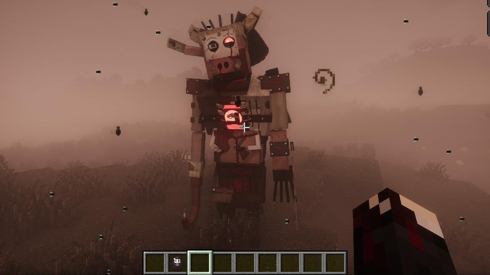
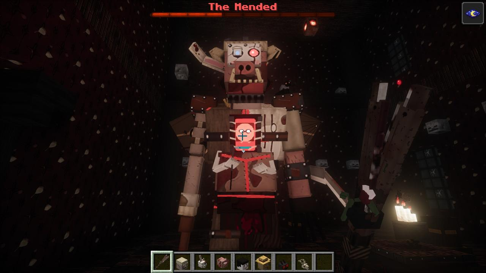

- Made at
- The Mending Altar, with one head from each of chapter two's nine
- Health
- 750
- Size
- Four blocks tall, hunched
- Phases
- Agony, Aggression, Iron Will
- Drops
- The Mended Heart and the Rusted Garden Key, with iron, chains and one of each of the nine's drops. By chance as it falls apart: bottles o' enchanting (60%), netherite scrap (25%), a totem of undying (15%), an enchanted golden apple (5%).

The mending
Put one head from each of the nine (the Bunnyman, the Hookman, the Hogshead, the Porcelain Man, the Harvestman, Mothman, the Jersey Devil, Dogman and the Flatwoods Monster) on the trophy pedestals round the Mending Altar, and right-click the altar with an empty hand. The Watcher, waiting on the ceiling, does the rest.
It takes about thirty seconds. The heads scream as it talks, and their agony runs out of them in red streams into a knot over the floor. It pours its shadow into the knot. The heads are torn apart one by one; chains come down out of the dark and something hammers iron into the knot; the body is there, red hot, its pieces slamming together. It stands, the chains snap, and it roars with all nine voices. Nothing can hurt it until then.
what i make out of them won't be pretty and it won't be kind.
it will be one thing instead of nine. that's the point. one thing can be killed.
Description
Four blocks tall, hunched, held together with stitches and iron: a pig's head with the Porcelain Man's cracked face bolted over it (with Mothman's eye bulging out of the mask) and the Jersey Devil's horns, the Hookman's arm and hook, the Hogshead's arm with the Dogman's claws and the Harvestman's scythe, a dog's leg and a goat's, Mothman's wings down its back, and the Flatwoods Monster's lamp burning in its open chest. A crow stands on its shoulder plate.
How it fights
Agony
The killers' ways: a two-blow chop with the scythe arm; the hook thrown on its chain to drag you in, then the chop; a head-down charge (sidestep it into a wall and it stands there stunned, taking extra damage); a whole turn with the scythe held out if you get round it. It also fires its needles, pours its chest-lamp's beam on you, and calls the crows.
At 60% it tears itself open: the stitches burst, the wings rip loose and spread, and it screams.
Aggression
Faster, with the cryptids' ways too: Mothman's screech (darkness, your legs heavy), the Jersey Devil's spring into the air and glide, the Flatwoods mist out of its chest (poison and nausea), and the Dogman's claw, claw, bite.
At 25% it drops to one knee and iron is driven into it: chains up out of the ground, plates and nails, red hot. The boss bar turns white.
Iron Will
Armoured and slow, but much faster whenever nobody is looking at it. It kneels to mend itself, white arms sewing it shut and healing it, unless you hit it hard enough to tear the stitches (it staggers and takes extra damage). It slams both fists down and a ring of iron spikes runs out across the floor: jump it.
It can't be hurt while it tears itself open or while the iron goes in.
How to survive it
- Bring torches, food, and "more than you think", as the Watcher's pages say. Don't let it get between you and the doors.
- Sidestep the charge into a wall for a free window of extra damage.
- In Iron Will, keep your eyes on it: it's much faster when nobody's looking. Hit hard while it kneels to mend.
- Jump the ring of spikes.
Its end
It comes apart: the bolts burst, the hook arm tears off, the wings fall away, the white arms shatter, and the lamp in its chest gutters and goes out. It goes down on its knees, onto its claws, onto its face, and the nine go up out of it, each a light at the head of its stream. Then the Watcher has something to say about the glass house.
Its Mended Heart (Iron Will): hold it up for three minutes of Resistance II, Strength I and Absorption II, then it has to beat itself warm again. Its Rusted Garden Key opens the Botanic Gardens. Its statue, carved in weathered stone with blood pouring from its mouth, stands in the Mansion's fountain.
...listen. something in the glass house heard all of that. it's awake now.

Turned
Since 1.51.0 the parasite can take it. Turned, it's the Mended, Unstitched: what holds the nine together now is the parasite.